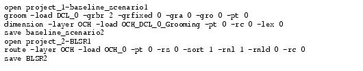

Batch Console
Batch Console
You can use SP Guru Transport Planner's batch console to open scenarios and run network design operations automatically. The batch console supports actions like routing, dimensioning, grooming, ring design, calculation of service availability, and evaluation of traffic variations.
To record commands in a batch file, you enter a "recording batch file" mode and specify operations using the SP Guru Transport Planner user interface. SP Guru Transport Planner writes commands to the batch file that describe the actions and options you specified.
After you create a batch file, you can run it at your convenience. For example, you might want to run a complex batch file overnight so you can view the results the next morning.
Batch files have the following characteristics:
- A batch file specifies one or more command sequences. Each sequence has three sets of commands:
- When you run a batch file, SP Guru Transport Planner runs the commands in the order in which they are listed in the file. This means that the network state after operation x is the input to operation x+1. In this situation, the x and x+1 operations take place on the same network project and scenario, following a single open action.
Figure 16-1 shows an example of a batch file with two command sequences:
- Open project_1, groom the DCL_0 traffic matrix in baseline_scenario1, dimension the resulting OCH traffic matrix (OCH_DCL_0_Grooming), and save the results to baseline_scenario_2 (lines 1 to 4)
- Open project_2, route the OCH_0 traffic matrix in scenario BLSR1, and save the results to scenario BLSR2 (lines 5 to 7)
Figure 16-1 SP Guru Transport Planner Batch File: Example

| Home © 1987-2007 OPNET Technologies, Inc. All Rights Reserved. This software may be covered by one or more U.S. Patents. See complete patent notice in the Legal Notices section. OPNET Support Center |